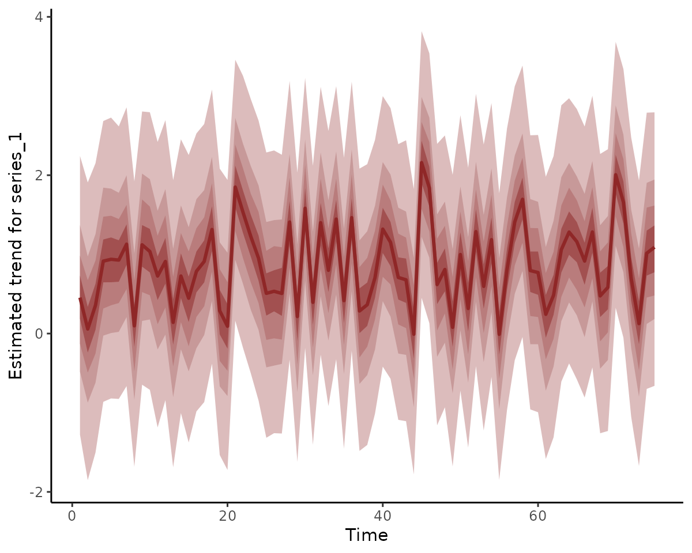
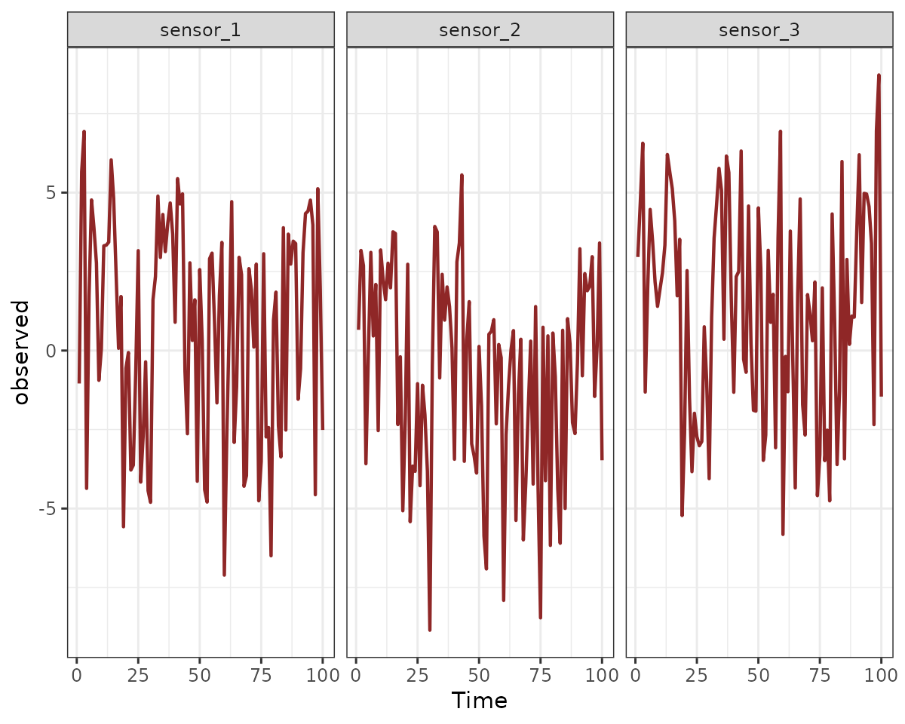
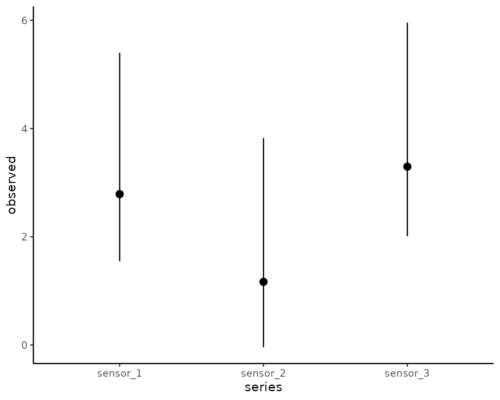
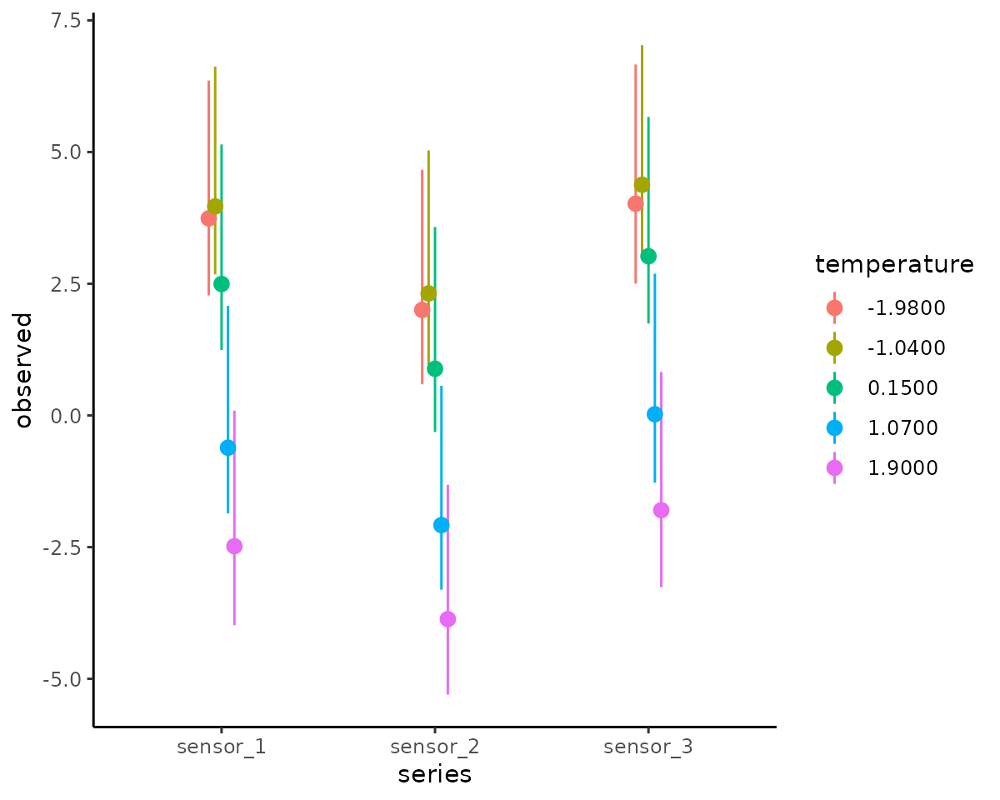
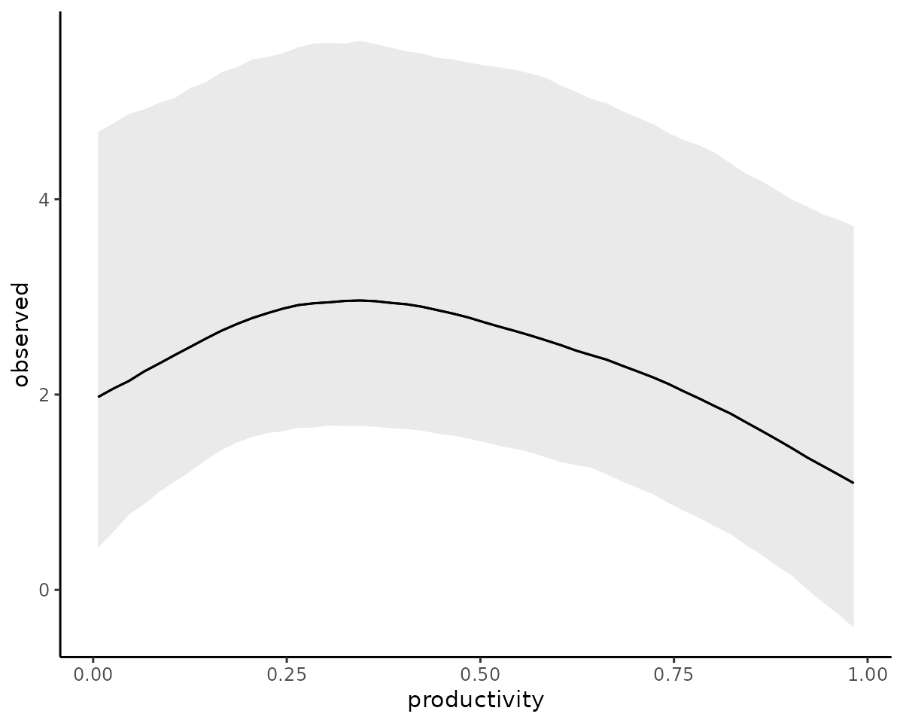

Shared latent states in mvgam
Nicholas J Clark
2026-01-20
Source:vignettes/shared_states.Rmd
shared_states.RmdThis vignette gives an example of how mvgam can be used
to estimate models where multiple observed time series share the same
latent process model. For full details on the basic mvgam
functionality, please see the
introductory vignette.
The trend_map argument
The trend_map argument in the mvgam()
function is an optional data.frame that can be used to
specify which series should depend on which latent process models
(called “trends” in mvgam). This can be particularly useful
if we wish to force multiple observed time series to depend on the same
latent trend process, but with different observation processes. If this
argument is supplied, a latent factor model is set up by setting
use_lv = TRUE and using the supplied trend_map
to set up the shared trends. Users familiar with the MARSS
family of packages will recognize this as a way of specifying the \(Z\) matrix. This data.frame
needs to have column names series and trend,
with integer values in the trend column to state which
trend each series should depend on. The series column
should have a single unique entry for each time series in the data, with
names that perfectly match the factor levels of the series
variable in data). For example, if we were to simulate a
collection of three integer-valued time series (using
sim_mvgam), the following trend_map would
force the first two series to share the same latent trend process:
set.seed(122)
simdat <- sim_mvgam(
trend_model = AR(),
prop_trend = 0.6,
mu = c(0, 1, 2),
family = poisson()
)
trend_map <- data.frame(
series = unique(simdat$data_train$series),
trend = c(1, 1, 2)
)
trend_map
#> series trend
#> 1 series_1 1
#> 2 series_2 1
#> 3 series_3 2We can see that the factor levels in trend_map match
those in the data:
Checking trend_map with
run_model = FALSE
Supplying this trend_map to the mvgam
function for a simple model, but setting run_model = FALSE,
allows us to inspect the constructed Stan code and the data
objects that would be used to condition the model. Here we will set up a
model in which each series has a different observation process (with
only a different intercept per series in this case), and the two latent
dynamic process models evolve as independent AR1 processes that also
contain a shared nonlinear smooth function to capture repeated
seasonality. This model is not too complicated but it does show how we
can learn shared and independent effects for collections of time series
in the mvgam framework:
fake_mod <- mvgam(
y ~
# observation model formula, which has a
# different intercept per series
series - 1,
# process model formula, which has a shared seasonal smooth
# (each latent process model shares the SAME smooth)
trend_formula = ~ s(season, bs = "cc", k = 6),
# AR1 dynamics (each latent process model has DIFFERENT)
# dynamics; processes are estimated using the noncentred
# parameterisation for improved efficiency
trend_model = AR(),
noncentred = TRUE,
# supplied trend_map
trend_map = trend_map,
# data and observation family
family = poisson(),
data = simdat$data_train,
run_model = FALSE
)Inspecting the Stan code shows how this model is a
dynamic factor model in which the loadings are constructed to reflect
the supplied trend_map:
stancode(fake_mod)
#> // Stan model code generated by package mvgam
#> data {
#> int<lower=0> total_obs; // total number of observations
#> int<lower=0> n; // number of timepoints per series
#> int<lower=0> n_sp_trend; // number of trend smoothing parameters
#> int<lower=0> n_lv; // number of dynamic factors
#> int<lower=0> n_series; // number of series
#> matrix[n_series, n_lv] Z; // matrix mapping series to latent states
#> int<lower=0> num_basis; // total number of basis coefficients
#> int<lower=0> num_basis_trend; // number of trend basis coefficients
#> vector[num_basis_trend] zero_trend; // prior locations for trend basis coefficients
#> matrix[total_obs, num_basis] X; // mgcv GAM design matrix
#> matrix[n * n_lv, num_basis_trend] X_trend; // trend model design matrix
#> array[n, n_series] int<lower=0> ytimes; // time-ordered matrix (which col in X belongs to each [time, series] observation?)
#> array[n, n_lv] int ytimes_trend;
#> int<lower=0> n_nonmissing; // number of nonmissing observations
#> matrix[4, 4] S_trend1; // mgcv smooth penalty matrix S_trend1
#> array[n_nonmissing] int<lower=0> flat_ys; // flattened nonmissing observations
#> matrix[n_nonmissing, num_basis] flat_xs; // X values for nonmissing observations
#> array[n_nonmissing] int<lower=0> obs_ind; // indices of nonmissing observations
#> }
#> transformed data {
#>
#> }
#> parameters {
#> // raw basis coefficients
#> vector[num_basis] b_raw;
#> vector[num_basis_trend] b_raw_trend;
#>
#> // latent state SD terms
#> vector<lower=0>[n_lv] sigma;
#>
#> // latent state AR1 terms
#> vector<lower=-1, upper=1>[n_lv] ar1;
#>
#> // raw latent states
#> matrix[n, n_lv] LV_raw;
#>
#> // smoothing parameters
#> vector<lower=0>[n_sp_trend] lambda_trend;
#> }
#> transformed parameters {
#> // raw latent states
#> vector[n * n_lv] trend_mus;
#> matrix[n, n_series] trend;
#>
#> // basis coefficients
#> vector[num_basis] b;
#>
#> // latent states
#> matrix[n, n_lv] LV;
#> vector[num_basis_trend] b_trend;
#>
#> // observation model basis coefficients
#> b[1 : num_basis] = b_raw[1 : num_basis];
#>
#> // process model basis coefficients
#> b_trend[1 : num_basis_trend] = b_raw_trend[1 : num_basis_trend];
#>
#> // latent process linear predictors
#> trend_mus = X_trend * b_trend;
#> LV = LV_raw .* rep_matrix(sigma', rows(LV_raw));
#> for (j in 1 : n_lv) {
#> LV[1, j] += trend_mus[ytimes_trend[1, j]];
#> for (i in 2 : n) {
#> LV[i, j] += trend_mus[ytimes_trend[i, j]]
#> + ar1[j] * (LV[i - 1, j] - trend_mus[ytimes_trend[i - 1, j]]);
#> }
#> }
#>
#> // derived latent states
#> for (i in 1 : n) {
#> for (s in 1 : n_series) {
#> trend[i, s] = dot_product(Z[s, : ], LV[i, : ]);
#> }
#> }
#> }
#> model {
#> // prior for seriesseries_1...
#> b_raw[1] ~ student_t(3, 0, 2);
#>
#> // prior for seriesseries_2...
#> b_raw[2] ~ student_t(3, 0, 2);
#>
#> // prior for seriesseries_3...
#> b_raw[3] ~ student_t(3, 0, 2);
#>
#> // priors for AR parameters
#> ar1 ~ std_normal();
#>
#> // priors for latent state SD parameters
#> sigma ~ inv_gamma(1.418, 0.452);
#> to_vector(LV_raw) ~ std_normal();
#>
#> // dynamic process models
#>
#> // prior for (Intercept)_trend...
#> b_raw_trend[1] ~ student_t(3, 0, 2);
#>
#> // prior for s(season)_trend...
#> b_raw_trend[2 : 5] ~ multi_normal_prec(zero_trend[2 : 5],
#> S_trend1[1 : 4, 1 : 4] * lambda_trend[1]);
#> lambda_trend ~ normal(5, 30);
#> {
#> // likelihood functions
#> vector[n_nonmissing] flat_trends;
#> flat_trends = to_vector(trend)[obs_ind];
#> flat_ys ~ poisson_log_glm(append_col(flat_xs, flat_trends), 0.0,
#> append_row(b, 1.0));
#> }
#> }
#> generated quantities {
#> vector[total_obs] eta;
#> matrix[n, n_series] mus;
#> vector[n_sp_trend] rho_trend;
#> vector[n_lv] penalty;
#> array[n, n_series] int ypred;
#> penalty = 1.0 / (sigma .* sigma);
#> rho_trend = log(lambda_trend);
#>
#> matrix[n_series, n_lv] lv_coefs = Z;
#> // posterior predictions
#> eta = X * b;
#> for (s in 1 : n_series) {
#> mus[1 : n, s] = eta[ytimes[1 : n, s]] + trend[1 : n, s];
#> ypred[1 : n, s] = poisson_log_rng(mus[1 : n, s]);
#> }
#> }Notice the line that states “lv_coefs = Z;”. This uses the supplied
\(Z\) matrix to construct the loading
coefficients. The supplied matrix now looks exactly like what you’d use
if you were to create a similar model in the MARSS
package:
fake_mod$model_data$Z
#> [,1] [,2]
#> [1,] 1 0
#> [2,] 1 0
#> [3,] 0 1Fitting and inspecting the model
Though this model doesn’t perfectly match the data-generating process (which allowed each series to have different underlying dynamics), we can still fit it to show what the resulting inferences look like:
full_mod <- mvgam(
y ~ series - 1,
trend_formula = ~ s(season, bs = "cc", k = 6),
trend_model = AR(),
noncentred = TRUE,
trend_map = trend_map,
family = poisson(),
data = simdat$data_train,
silent = 2
)The summary of this model is informative as it shows that only two latent process models have been estimated, even though we have three observed time series. The model converges well
summary(full_mod)
#> GAM observation formula:
#> y ~ series - 1
#>
#> GAM process formula:
#> ~s(season, bs = "cc", k = 6)
#>
#> Family:
#> poisson
#>
#> Link function:
#> log
#>
#> Trend model:
#> AR()
#>
#> N process models:
#> 2
#>
#> N series:
#> 3
#>
#> N timepoints:
#> 75
#>
#> Status:
#> Fitted using Stan
#> 4 chains, each with iter = 1000; warmup = 500; thin = 1
#> Total post-warmup draws = 2000
#>
#> GAM observation model coefficient (beta) estimates:
#> 2.5% 50% 97.5% Rhat n_eff
#> seriesseries_1 -2.80 -0.69 1.4 1.01 702
#> seriesseries_2 -1.90 0.25 2.3 1.01 708
#> seriesseries_3 -0.89 1.20 3.3 1.01 697
#>
#> standard deviation:
#> 2.5% 50% 97.5% Rhat n_eff
#> sigma[1] 0.37 0.53 0.74 1 700
#> sigma[2] 0.49 0.61 0.78 1 669
#>
#> autoregressive coef 1:
#> 2.5% 50% 97.5% Rhat n_eff
#> ar1[1] -0.59 -0.240 0.18 1.00 480
#> ar1[2] -0.30 0.031 0.36 1.02 355
#>
#> GAM process model coefficient (beta) estimates:
#> 2.5% 50% 97.5% Rhat n_eff
#> (Intercept)_trend -1.30 0.800 3.00 1.01 720
#> s(season).1_trend -0.32 -0.053 0.21 1.00 1091
#> s(season).2_trend -0.06 0.240 0.51 1.01 1005
#> s(season).3_trend -0.50 -0.180 0.12 1.00 696
#> s(season).4_trend 0.37 0.690 0.98 1.01 733
#>
#> Approximate significance of GAM process smooths:
#> edf Ref.df Chi.sq p-value
#> s(season) 2.667 4 20.75 0.000262 ***
#> ---
#> Signif. codes: 0 '***' 0.001 '**' 0.01 '*' 0.05 '.' 0.1 ' ' 1
#>
#> Stan MCMC diagnostics:
#> ✔ No issues with effective samples per iteration
#> ✔ Rhat looks good for all parameters
#> ✔ No issues with divergences
#> ✔ No issues with maximum tree depth
#>
#> Samples were drawn using sampling(hmc). For each parameter, n_eff is a
#> crude measure of effective sample size, and Rhat is the potential scale
#> reduction factor on split MCMC chains (at convergence, Rhat = 1)
#>
#> Use how_to_cite() to get started describing this modelBoth series 1 and 2 share the exact same latent process estimates, while the estimates for series 3 are different:
plot(full_mod, type = "trend", series = 1)
plot(full_mod, type = "trend", series = 2)
plot(full_mod, type = "trend", series = 3)However, forecasts for series’ 1 and 2 will differ because they have different intercepts in the observation model
Example: signal detection
Now we will explore a more complicated example. Here we simulate a
true hidden signal that we are trying to track. This signal depends
nonlinearly on some covariate (called productivity, which
represents a measure of how productive the landscape is). The signal
also demonstrates a fairly large amount of temporal autocorrelation:
set.seed(123)
# simulate a nonlinear relationship using the mgcv function gamSim
signal_dat <- mgcv::gamSim(n = 100, eg = 1, scale = 1)
#> Gu & Wahba 4 term additive model
# productivity is one of the variables in the simulated data
productivity <- signal_dat$x2
# simulate the true signal, which already has a nonlinear relationship
# with productivity; we will add in a fairly strong AR1 process to
# contribute to the signal
true_signal <- as.vector(scale(signal_dat$y) +
arima.sim(100, model = list(ar = 0.8, sd = 0.1)))Plot the signal to inspect it’s evolution over time
plot(
true_signal,
type = "l",
bty = "l", lwd = 2,
ylab = "True signal",
xlab = "Time"
)Next we simulate three sensors that are trying to track the same
hidden signal. All of these sensors have different observation errors
that can depend nonlinearly on a second external covariate, called
temperature in this example. Again this makes use of
gamSim
# Function to simulate a monotonic response to a covariate
sim_monotonic <- function(x, a = 2.2, b = 2) {
out <- exp(a * x) / (6 + exp(b * x)) * -1
return(2.5 * as.vector(scale(out)))
}
# Simulated temperature covariate
temperature <- runif(100, -2, 2)
# Simulate the three series
sim_series <- function(n_series = 3, true_signal) {
temp_effects <- mgcv::gamSim(n = 100, eg = 7, scale = 0.05)
alphas <- rnorm(n_series, sd = 2)
do.call(rbind, lapply(seq_len(n_series), function(series) {
data.frame(
observed = rnorm(length(true_signal),
mean = alphas[series] +
sim_monotonic(temperature,
runif(1, 2.2, 3),
runif(1, 2.2, 3)) +
true_signal,
sd = runif(1, 1, 2)
),
series = paste0("sensor_", series),
time = 1:length(true_signal),
temperature = temperature,
productivity = productivity,
true_signal = true_signal
)
}))
}
model_dat <- sim_series(true_signal = true_signal) %>%
dplyr::mutate(series = factor(series))
#> Gu & Wahba 4 term additive model, correlated predictorsPlot the sensor observations
plot_mvgam_series(
data = model_dat, y = "observed",
series = "all"
)
And now plot the observed relationships between the three sensors and
the temperature covariate
plot(
observed ~ temperature,
data = model_dat %>%
dplyr::filter(series == "sensor_1"),
pch = 16, bty = "l",
ylab = "Sensor 1",
xlab = "Temperature"
)
plot(
observed ~ temperature,
data = model_dat %>%
dplyr::filter(series == "sensor_2"),
pch = 16, bty = "l",
ylab = "Sensor 2",
xlab = "Temperature"
)
plot(
observed ~ temperature,
data = model_dat %>%
dplyr::filter(series == "sensor_3"),
pch = 16, bty = "l",
ylab = "Sensor 3",
xlab = "Temperature"
)The shared signal model
Now we can formulate and fit a model that allows each sensor’s
observation error to depend nonlinearly on temperature
while allowing the true signal to depend nonlinearly on
productivity. By fixing all of the values in the
trend column to 1 in the
trend_map, we are assuming that all observation sensors are
tracking the same latent signal. We use informative priors on the two
variance components (process error and observation error), which reflect
our prior belief that the observation error is smaller overall than the
true process error
mod <- mvgam(
formula =
# formula for observations, allowing for different
# intercepts and hierarchical smooth effects of temperature
observed ~ series +
s(temperature, k = 10) +
s(series, temperature, bs = "sz", k = 8),
trend_formula =
# formula for the latent signal, which can depend
# nonlinearly on productivity
~ s(productivity, k = 8) - 1,
trend_model =
# in addition to productivity effects, the signal is
# assumed to exhibit temporal autocorrelation
AR(),
noncentred = TRUE,
trend_map =
# trend_map forces all sensors to track the same
# latent signal
data.frame(
series = unique(model_dat$series),
trend = c(1, 1, 1)
),
# informative priors on process error
# and observation error will help with convergence
priors = c(
prior(normal(2, 0.5), class = sigma),
prior(normal(1, 0.5), class = sigma_obs)
),
# Gaussian observations
family = gaussian(),
data = model_dat,
silent = 2
)View a reduced version of the model summary because there will be many spline coefficients in this model
summary(mod, include_betas = FALSE)
#> GAM observation formula:
#> observed ~ series + s(temperature, k = 10) + s(series, temperature,
#> bs = "sz", k = 8)
#>
#> GAM process formula:
#> ~s(productivity, k = 8) - 1
#>
#> Family:
#> gaussian
#>
#> Link function:
#> identity
#>
#> Trend model:
#> AR()
#>
#> N process models:
#> 1
#>
#> N series:
#> 3
#>
#> N timepoints:
#> 100
#>
#> Status:
#> Fitted using Stan
#> 4 chains, each with iter = 1100; warmup = 600; thin = 1
#> Total post-warmup draws = 2000
#>
#> Observation error parameter estimates:
#> 2.5% 50% 97.5% Rhat n_eff
#> sigma_obs[1] 1.3 1.5 1.8 1 2252
#> sigma_obs[2] 1.1 1.4 1.6 1 1844
#> sigma_obs[3] 1.2 1.5 1.8 1 2435
#>
#> GAM observation model coefficient (beta) estimates:
#> 2.5% 50% 97.5% Rhat n_eff
#> (Intercept) 0.067 1.20 4.10 1.01 405
#> seriessensor_2 -2.400 -1.60 -0.71 1.00 1101
#> seriessensor_3 -0.550 0.53 1.50 1.00 1461
#>
#> Approximate significance of GAM observation smooths:
#> edf Ref.df Chi.sq p-value
#> s(temperature) 4.050 9 1392.965 <2e-16 ***
#> s(series,temperature) 2.264 16 1.762 1
#> ---
#> Signif. codes: 0 '***' 0.001 '**' 0.01 '*' 0.05 '.' 0.1 ' ' 1
#>
#> standard deviation:
#> 2.5% 50% 97.5% Rhat n_eff
#> sigma[1] 0.87 1.2 1.5 1.01 389
#>
#> autoregressive coef 1:
#> 2.5% 50% 97.5% Rhat n_eff
#> ar1[1] 0.55 0.77 0.97 1.01 360
#>
#> Approximate significance of GAM process smooths:
#> edf Ref.df Chi.sq p-value
#> s(productivity) 2.211 7 36.21 0.117
#>
#> Stan MCMC diagnostics:
#> ✔ No issues with effective samples per iteration
#> ✔ Rhat looks good for all parameters
#> ✔ No issues with divergences
#> ✔ No issues with maximum tree depth
#>
#> Samples were drawn using sampling(hmc). For each parameter, n_eff is a
#> crude measure of effective sample size, and Rhat is the potential scale
#> reduction factor on split MCMC chains (at convergence, Rhat = 1)
#>
#> Use how_to_cite() to get started describing this modelInspecting effects on both process and observation models
Don’t pay much attention to the approximate p-values of the
smooth terms. The calculation for these values is incredibly sensitive
to the estimates for the smoothing parameters so I don’t tend to find
them to be very meaningful. What are meaningful, however, are
prediction-based plots of the smooth functions. All main effects can be
quickly plotted with conditional_effects:
conditional_effects(mod, type = "link")
conditional_effects is simply a wrapper to the more
flexible plot_predictions function from the
marginaleffects package. We can get more useful plots of
these effects using this function for further customisation:
plot_predictions(
mod,
condition = c("temperature", "series", "series"),
points = 0.5
) +
theme(legend.position = "none")We have successfully estimated effects, some of them nonlinear, that impact the hidden process AND the observations. All in a single joint model. But there can always be challenges with these models, particularly when estimating both process and observation error at the same time.
Recovering the hidden signal
A final but very key question is whether we can successfully recover
the true hidden signal. The trend slot in the returned
model parameters has the estimates for this signal, which we can easily
plot using the mvgam S3 method for plot. We
can also overlay the true values for the hidden signal, which shows that
our model has done a good job of recovering it:
plot(mod,
type = "trend") +
ggplot2::geom_point(data = data.frame(time = 1:100,
y = true_signal),
mapping = ggplot2::aes(x = time,
y = y))Further reading
The following papers and resources offer a lot of useful material about other types of State-Space models and how they can be applied in practice:
Auger‐Méthé, Marie, et al. “A guide to state–space modeling of ecological time series.” Ecological Monographs 91.4 (2021): e01470.
Clark, Nicholas J., et al. Beyond single-species models: leveraging multispecies forecasts to navigate the dynamics of ecological predictability. PeerJ. (2025): 13:e18929
Holmes, Elizabeth E., Eric J. Ward, and Wills Kellie. “MARSS: multivariate autoregressive state-space models for analyzing time-series data.” R Journal. 4.1 (2012): 11.
Ward, Eric J., et al. “Inferring spatial structure from time‐series data: using multivariate state‐space models to detect metapopulation structure of California sea lions in the Gulf of California, Mexico.” Journal of Applied Ecology 47.1 (2010): 47-56.